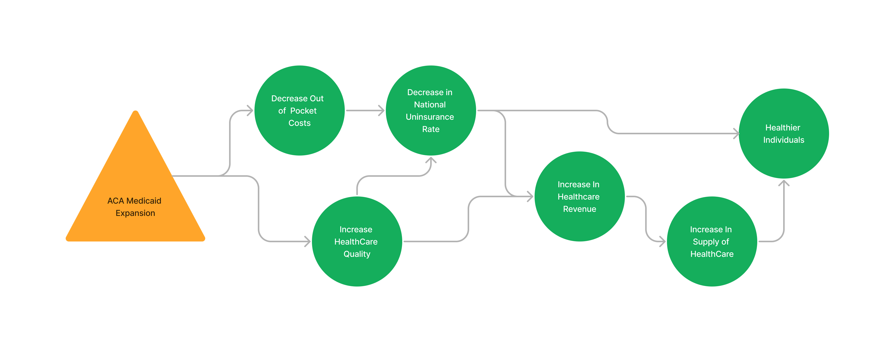
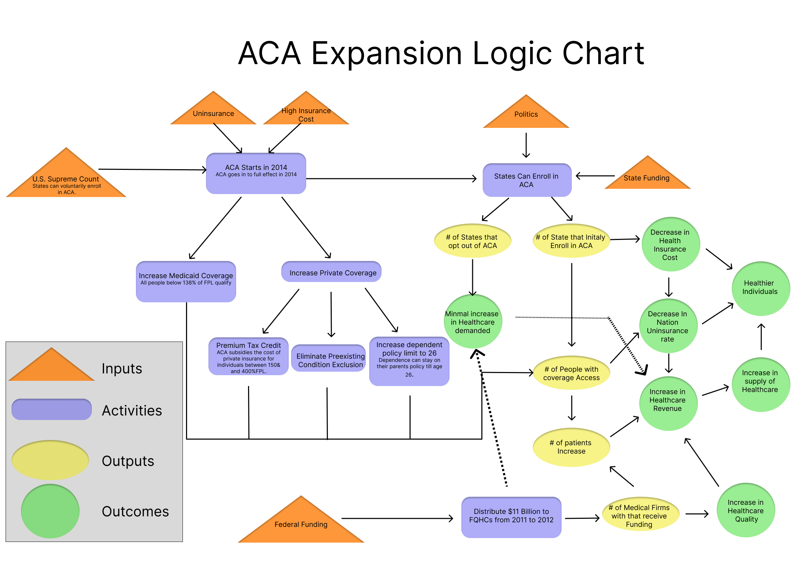

Background
1: Program theory
The ACA Medicaid expansion program is designed to increase United States citizens’ relative health. This is theoretically accomplished by making health insurance more affordable for people below 400% FPL, expanding Medicaid to cover all adults with incomes below 138% FPL, and supporting medical delivery advancements to lower general health care costs.
Before 2010, many private health insurers removed young adults from their parent’s health insurance policies. A common misconception is that young adults do not need health insurance, but researchers found that 1 in 6 has a chronic illness. Additionally, young adults have the lowest employer-based insurance access. Often, employees will not offer coverage for entry-level or part-time positions. This left many, including recent college graduates, without health coverage, resulting in the largest group of uninsured individuals (about 30 percent). ACA activities combat this by allowing dependents to stay on their parent’s insurance policies until age 26, regardless of the child’s living location. It was predicted that this would increase family premiums by only .7 percent while providing 1.2 million young Americans coverage.
In 2013, one year before ACA went into full effect, 15 percent of Americans were uninsured, and in 2005, 16.9 percent of Americans reportedly faced at least one financial barrier. The ACA aims to decrease uninsurance by allowing all individuals under the 138% FPL access to Medicaid. For individuals between 400% and 138% FPL, ACA offers “Premium Tax Credits” to subsidies private health insurance.
The results of the 1970s RAND health experiments suggest that as the price of health care decreases, the likelihood of use increases. The post-ACA period should expect increased patient visits and total expenses per person. The positive demand shock will increase revenue streams for medical corporations. Medical quality and supply increase will be seen primarily for enrolled stats. However, non-expanded states should expend a spillover in medical quality. The ACA expansion will fund Federally Qualified Health Centers (FQHCs) regardless of state enrollment states.

2: Logic model
Inputs
State Funding: Before the expansion, states paid up to 50% of Medicare’s cost. Under the ACA, the federal government will pay 100% of the cost until 2016 and 90% after that.
Federal Funding: The federal government will pay 100% of ACA costs until 2016 and 90% after that. Additionally, the Government will provide $11 Billion in funding to Federally Qualified Health Centers (FQHC).
High Uninsurance Rate: The proportion of Americans without health insurance to those with health insurance. Before 2014, uninsurance was at its highest (18 percent).
High Health Insurance Cost: Health insurance has been increasing dramatically as Americans age. The high cost is a motivator for the ACA expansion.
State Politics: On average, democratic starts are likelier to enroll in the ACA expansion, and republican states are less likely.
Supreme Court Decision: The Supreme court ruled that making the ACA expansion mandatory for states is unconstitutional. Instead, states can voluntarily opt-in.
Activities
ACA Started in 2014: The ACA was signed and put into partial effect by President Obama in 2010. In 2014 the ACA went into full effect.
States Enroll in ACA: States can opt in or out of ACA expansion.
Increase in Medicaid Coverage: Under the ACA, all Americans below 138% FPL are allowed access to Medicaid.
Increase Private Coverage: The ACA lowers cost barriers for new and existing private health insurance holders.
Eliminate Preexisting Condition Exclusion: Private health insurance companies cannot decline individuals because of preexisting conditions.
Increase Dependency Age: The ACA mandates that private insurance companies cannot drop dependents off parents’ health insurance policies until age 26.
Premium Tax Credits: Americans between 400% and 138% of FPL can receive premium tax credits to reduce private health insurance costs.
Distribute Federal Funding to FQHCs: $11 billion in federal funding will be dispersed between FQHCs across expansion and non-expansion states.
Outputs
Number of States that Opt Out of ACA: States can choose to enroll in ACA expansion.
Number of States that Enroll in ACA: States can choose not to enroll in ACA expansion.
Coverage Access Increases in Expansion States: More low-income people have access to affordable healthcare insurance in expansion states.
Number of Patients Patients Increase in Expansion States: Due to a relative decrease in healthcare costs, the number of patients will increase in expansion states.
Number of Healthcare Firms the Receive Funding: Federal Funding will initiate more medical research to develop better medical delivery methods.
Outcomes
Health Insurance Cost Decreases: The out-of-pocket costs Americans pay for healthcare will fall.
Non-expansion Healthcare Demand: A spillover effect from increased healthcare quantity demanded in expansion states will slightly increase the quantity demanded in non-expansion states.
Uninsurance Rate Decreases: The increase in health insurance availability will cause the number of uninsured people to fall.
Healthcare Revenue Increases: From an increased demand for healthcare and an increase in federal funding, revenue will increase for healthcare companies.
Healthcare Quality Increases: Additional funding and demand will boost the quality of healthcare.
Healthcare Supply Increase: As a result of excess demand, the supply of healthcare will increase.
American Health Increases: More Americans have the means to receive healthcare, including preventative treatment.
Diagram

3: Analysis
I expect the ACA expansion implementation will follow the logic model. The logic is routed in basic economic theory and supported by the RAND healthcare experiment, which most health economist uses.
The open market and half-measure government intervention have failed thus far to decrease the number of uninsured individuals. Americans cannot receive the proper healthcare needed, causing the nation’s overall health to decline. The Government uses radical solutions to replace the falling insurance sector for low-income individuals. Unfortunately, one unintended consequence is crowding out private insurance.
How much overall American health increases is questionable. Evidence from the RAND study suggests that when healthcare cost decrease, the number of patients increase; however, there is no indication that health status increases. This may be because individuals indulge in more risky behaviors when readily available healthcare. Moral hazard may cause downward pressure on the intended effect of the ACA.
The net value, including the possible moral hazard consequences, should be positive. I find little evidence against the increase in revenue of medical companies. With a more affluent medical sector, the nation should expect advances in medical technology that will benefit the health of Americans.